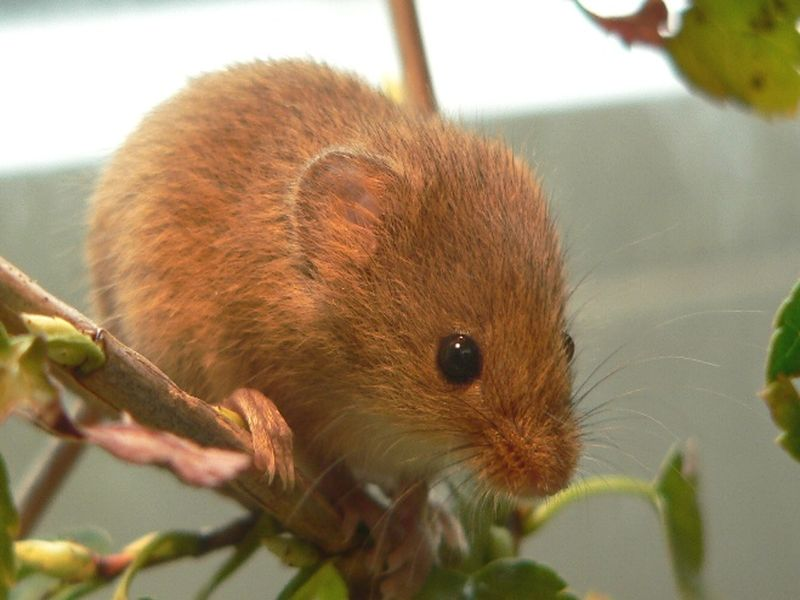

Zwergmaus
Micromys minutus
Gerade daumengroß ist die Zwergmaus eine typische Riedbewohnerin, die ihre Kugelnester aus Gras ca. 1 Meter über dem Erdboden ins Röhricht baut. Hier zieht die Maus - vor Bodenfeinden sicher - ihre Jungen auf. As spezialisierter Halmkletterer kann sie sich mit ihren Greiffüßen und ihrem Greifschwanz flink in Schilf und hohem Gras fortbewegen. Sie ernährt sich von Sämereien und Kleintieren. Den Winter verbringt sie in Erdlöchern, unter Schilfhaufen oder anderen bodennahen Verstecken, wo sie jedoch keinen Winterschlaf hält.